Histórico de Versão e Contribuição¶
| Data | Versão | Descrição | Autor(es) | Revisor(es) | Declaração de Uso de IA |
|---|---|---|---|---|---|
| 15/11/2026 | 1.0 |
Relato dos resultados da avaliação do protótipo de alta fidelidade da TAR-09 (Pedido de aumento do limite diário do Vale-Transporte), com dois participantes. | Tomás Rocho | Rodrigo Carvalho | Claude (Anthropic) - usado para estruturação do texto e formatação Markdown da página, a partir das informações da sessão fornecidas pelo autor |
Relato dos Resultados da Avaliação do Protótipo de Alta Fidelidade (TAR-09)¶
Neste documento, apresentam-se os resultados da avaliação do protótipo de alta fidelidade da TAR-09 (Solicitar Aumento do Limite Diário de Uso do Vale-Transporte). A avaliação seguiu o Planejamento da Avaliação do Protótipo de Alta Fidelidade, e este relato segue a estrutura do Planejamento do Relato dos Resultados.
Os dados de cada participante foram interpretados primeiro e, depois, consolidados para responder às perguntas da avaliação (Barbosa et al., 2021, pp. 262–263). Os problemas seriam descritos com o que foi observado, a possível causa e a recomendação (Barbosa et al., 2021, p. 289). Como nenhum problema foi observado, a seção 7 registra apenas essa conclusão.
Artefatos relacionados — fluxo da funcionalidade TAR-09 (Pedido de Aumento do Limite Diário do Vale-Transporte):
- Persona: Heitor Santos Júnior
- Cenário: Cenário 9
- Análise de tarefas: TAR-09
- Storyboard: Storyboard 05
- Nível 1: avaliação do storyboard e da análise de tarefas: Planejamento da avaliação · Planejamento do relato · Relato dos resultados (não realizado)
- Nível 2: protótipo de papel (baixa fidelidade): Planejamento da avaliação · Planejamento do relato · Relato dos resultados
- Nível 3: protótipo de alta fidelidade: Planejamento da avaliação · Planejamento do relato · Relato dos resultados (esta página)
- Telas do protótipo de papel: telas no planejamento da avaliação
- Protótipo de alta fidelidade navegável: acessar o protótipo
1. Introdução, Objetivos e Escopo¶
O protótipo avaliado representa o fluxo "Meu Vale-Transporte foi recusado" no site da SEMOB-DF: o passageiro descobre por que o cartão foi recusado na catraca, pede mais passagens por dia pelo celular, recebe um protocolo e acompanha o pedido. É um protótipo vertical (Barbosa et al., 2021): só o fluxo da TAR-09 funciona; os outros serviços da página inicial existem para não induzir a escolha.
Os objetivos da avaliação eram:
- verificar se o atalho "Meu Vale-Transporte foi recusado" é encontrado na página inicial;
- verificar se a explicação da recusa ("Você usou 8 de 8 passagens hoje") é entendida como limite diário, e não como falta de saldo;
- avaliar o pedido em três passos (rotina, fotos dos documentos e declaração do RH);
- avaliar a prevenção e a recuperação de erros (foto ilegível e declaração faltando);
- avaliar o feedback final, o protocolo e o acompanhamento do pedido;
- cobrir as pendências PE-01 a PE-04 deixadas pelo Relato do Protótipo de Papel.
Fora do escopo: a câmera, o aviso do WhatsApp e a análise da SEMOB foram simulados dentro do protótipo. A avaliação não verificou se o serviço pode ser implantado pela SEMOB-DF e pelo BRB Mobilidade.
1.1 Protótipo avaliado¶
Tabela 1: Identificação do Protótipo Avaliado
| Item | Detalhamento |
|---|---|
| Link do protótipo | prototipos/tar-09 (publicado no GitHub Pages junto com a Wiki) |
| Caminho no repositório | docs/prototipos/tar-09/ (index.html, styles.css, app.js) |
| Versão testada | Commit a09b751 (14/11/2026) |
| Tecnologia | HTML, CSS e JavaScript, sem servidor; abre no navegador do celular |
| Telas | T1 Página inicial · T2 Informar o cartão · T3 Explicação da recusa · W5 Postos · T4–T6 Pedido em três passos · E1 Foto ilegível · E2 Declaração faltando · T7 Revisão · T8 Confirmação · T9 Acompanhar pedido · N1 Aviso do WhatsApp |
| Dados | Fictícios: cartão 0042 1873 5560, protocolo 2026-0451 e fotos de documentos marcadas como "EXEMPLO" |
| Identidade visual | Visual do portal da SEMOB-DF (barra do GDF, título da Secretaria em letras finas, faixa de busca, cartões brancos com botão cinza-escuro e trilha de navegação com ">" verde), seguindo o Guia de Estilo do Grupo 05 |
Fonte: Elaborado por Tomás Rocho (2026).
O protótipo pode ser usado abaixo:
2. Método¶
- Método: teste de usabilidade com observação de uso (Barbosa et al., 2021, p. 288), com a técnica de pensar em voz alta (think aloud) e entrevista curta ao final.
- Tarefas: lidas uma de cada vez, a partir do Cenário 9: "Você trabalha com manutenção e passou o dia indo de prédio em prédio de ônibus. Na volta para casa, o cartão do Vale-Transporte não passou na catraca. Use o site da SEMOB no celular para resolver."
Tabela 2: Tarefas Avaliadas
| ID Tarefa | Enunciado | Critério de Conclusão |
|---|---|---|
| TAR-09.1 | "Descubra por que o seu cartão foi recusado." | Chega à T3 e explica a recusa como limite do dia. |
| TAR-09.2 | "Peça para poder usar mais passagens por dia. Os documentos que você precisa estão no celular." | Chega à T8 com o protocolo na tela. |
| TAR-09.3 | "Passaram alguns dias. Veja se o seu pedido foi aprovado." | Mostra a situação do pedido na T9 ou lê o aviso N1. |
Fonte: Elaborado por Tomás Rocho (2026), a partir do planejamento da avaliação.
- Teste piloto: foi feito um teste piloto antes das sessões, para conferir o protótipo, as tarefas e a gravação. Como prevê o planejamento, os dados do piloto não entram nos resultados (Barbosa et al., 2021, pp. 259–260).
2.1 Mudanças em relação ao planejamento¶
Tabela 3: Diferenças entre o Planejado e o Realizado
| Item | Planejado | Realizado | Efeito nos resultados |
|---|---|---|---|
| Protótipo | Figma (versão 1.0 do planejamento) | HTML, CSS e JavaScript (versão 1.1 do planejamento) | Nenhum efeito negativo: o protótipo ficou mais interativo (campos com digitação real e dados preservados ao voltar). |
| Participantes | 3 participantes | 2 participantes (P01 e P02) | Menos chance de encontrar problemas menos frequentes (seção 9). |
| Observador | Rodrigo Carvalho, separado do condutor | Tomás Rocho conduziu e observou sozinho | As anotações foram feitas por quem conduzia; as gravações servem de apoio para a revisão. |
| Datas | Piloto em 08/11 e sessões em 10, 12 e 14/11 | Gravações das sessões publicadas em 15/11/2026 | Nenhum efeito sobre os dados. |
| Medição do tempo | Cronometragem por tarefa e por participante | Tempo aproximado de cada tarefa, estimado pelo avaliador | Os tempos servem só para dar uma ideia da duração (seção 4). |
Fonte: Elaborado por Tomás Rocho (2026).
3. Participantes e Avaliadores¶
Tabela 4: Participantes, Avaliador e Gravações
| Código | Perfil (sem dados pessoais) | Proximidade com a persona Heitor | Gravação |
|---|---|---|---|
| P01 | Usuário do Vale-Transporte recrutado pelo perfil do planejamento (trabalhador que usa o transporte público do DF e o celular no dia a dia). | Alta | Sessão P01 (5 min 05 s) |
| P02 | Usuário do Vale-Transporte recrutado pelo perfil do planejamento (trabalhador que usa o transporte público do DF e o celular no dia a dia). | Alta | Sessão P02 (6 min 01 s) |
Fonte: Elaborado por Tomás Rocho (2026). Avaliador: Tomás Rocho (condutor e observador).
Ética: antes de cada sessão, o participante foi informado do objetivo acadêmico, de que o avaliado era o protótipo e não ele, de que o protótipo não envia pedido nenhum à SEMOB-DF e de que podia parar a qualquer momento. Ele leu e assinou o TCLE e autorizou a gravação. Só foram usados dados fictícios, e os participantes aparecem apenas pelos códigos P01 e P02 (Barbosa et al., 2021, pp. 127–128).
As gravações das duas sessões estão abaixo:
Sessão P01
Sessão P02
4. Desempenho por Tarefa¶
Tabela 5: Desempenho de Cada Participante nas Tarefas
| Participante | Tarefa | Conclusão | Erros | Pedidos de Ajuda | Dificuldades Observadas |
|---|---|---|---|---|---|
| P01 | TAR-09.1 | Sem ajuda | 0 | 0 | Nenhuma. |
| P01 | TAR-09.2 | Sem ajuda | 0 | 0 | Nenhuma. |
| P01 | TAR-09.3 | Sem ajuda | 0 | 0 | Nenhuma. |
| P02 | TAR-09.1 | Sem ajuda | 0 | 0 | Nenhuma. |
| P02 | TAR-09.2 | Sem ajuda | 0 | 0 | Nenhuma. |
| P02 | TAR-09.3 | Sem ajuda | 0 | 0 | Nenhuma. |
Fonte: Elaborado por Tomás Rocho (2026).
Tabela 6: Resumo das Duas Sessões por Tarefa
| Tarefa | Concluíram sem ajuda | Concluíram com ajuda | Não concluíram | Tempo aproximado | Total de erros | Total de pedidos de ajuda |
|---|---|---|---|---|---|---|
| TAR-09.1 | 2 de 2 | 0 de 2 | 0 de 2 | cerca de 10 s | 0 | 0 |
| TAR-09.2 | 2 de 2 | 0 de 2 | 0 de 2 | cerca de 1 min 30 s | 0 | 0 |
| TAR-09.3 | 2 de 2 | 0 de 2 | 0 de 2 | cerca de 20 s | 0 | 0 |
Fonte: Elaborado por Tomás Rocho (2026). Os tempos foram estimados pelo avaliador para as duas sessões e não foram cronometrados por participante; servem só como referência, sem meta numérica.
A TAR-09.2 foi a mais longa, como era esperado: ela tem a descrição da rotina, três fotos (uma delas recusada de propósito pelo erro E1) e a revisão do pedido. Mesmo assim, os dois participantes passaram por ela sem pedir ajuda.
5. Interpretação por Participante¶
- P01: encontrou o atalho "Meu Vale-Transporte foi recusado" na página inicial sem entrar em outro serviço e entendeu, na T3, que o cartão foi recusado pelo limite de passagens do dia. No pedido, descreveu a rotina, enviou os documentos, tirou outra foto quando o comprovante foi recusado (E1), enviou a declaração do RH e chegou ao protocolo. Na última tarefa, conferiu que o pedido tinha sido aprovado. Não teve desvios, erros nem pedidos de ajuda.
- P02: seguiu o mesmo caminho de P01, também sem desvios, erros ou pedidos de ajuda, e concluiu as três tarefas.
Nos dois casos, o fluxo foi seguido na ordem prevista na TAR-09 (entender a recusa → montar o pedido → acompanhar), sem que o avaliador precisasse intervir.
6. Respostas às Perguntas da Avaliação¶
Tabela 7: Resultado das Perguntas da Avaliação
| ID | Pergunta (resumo) | Critério de Aceitação | P01 | P02 | Resultado Geral |
|---|---|---|---|---|---|
| Q01 | Encontra o atalho na página inicial? | Toca no atalho certo sem entrar antes em outro serviço. | S | S | Atingido nos dois. |
| Q02 | Entende por que o cartão foi recusado? | Explica que passou do limite, e não que está sem saldo. | S | S | Atingido nos dois. |
| Q03 | Entende que as integrações contam? | Diz que cada ônibus conta, mesmo com integração. | S | S | Atingido nos dois; nenhum participante mostrou dúvida sobre o aviso. |
| Q04 | Preenche a rotina e envia os documentos sem ajuda? | Conclui os passos 1 a 3 sem perguntar o que colocar. | S | S | Atingido nos dois. |
| Q05 | Recupera-se do erro de foto ilegível (E1)? | Toca em "Tirar outra foto" sem ajuda. | S | S | Atingido nos dois. |
| Q06 | Entende o aviso de declaração faltando (E2)? | Volta ao passo 3 sem perder os dados. | Não testada | Não testada | Nenhum participante tentou revisar o pedido sem a declaração, então o aviso E2 não apareceu. |
| Q07 | Sabe que o pedido foi recebido e como acompanhar? | Cita o protocolo, o aviso e a consulta. | S | S | Atingido nos dois. |
| Q08 | Sabe onde está dentro do pedido? | Diz o passo em que está e como voltar. | S | S | Atingido nos dois; nenhum participante se perdeu nos três passos. |
| Q09 | O que achou claro, confuso ou faltando? | Opinião aberta. | Sem pontos confusos | Sem pontos confusos | Os dois avaliaram bem o protótipo e não apontaram nada confuso ou faltando. |
Fonte: Elaborado por Tomás Rocho (2026). Legenda: S = sim.
Pergunta sem resposta: apenas a Q06 ficou sem resposta, porque o aviso E2 só aparece se o participante tentar revisar o pedido sem a declaração do RH, e nenhum dos dois fez isso.
7. Problemas de Usabilidade Encontrados¶
Tabela 8: Problemas de Usabilidade Encontrados
| ID | O que foi observado | Tela ou Estado | Participantes | Severidade (0–4) | Recomendação |
|---|---|---|---|---|---|
| — | Nenhum problema de usabilidade foi observado. Os dois participantes concluíram as três tarefas sem ajuda, sem desvios e sem erros, e não sugeriram mudanças. | — | 0 de 2 | — | Manter o fluxo, os textos e o visual do protótipo. |
Fonte: Elaborado por Tomás Rocho (2026).
8. Comparação com o Protótipo de Papel¶
O Relato do Protótipo de Papel também não encontrou problemas de usabilidade, mas deixou quatro pendências. A Tabela 9 mostra o que foi coberto agora.
Tabela 9: Pendências do Protótipo de Papel Verificadas no Protótipo Navegável
| Pendência do Nível 2 | O que foi feito no Nível 3 | Situação | Evidência |
|---|---|---|---|
| PE-01: tempo das tarefas não medido | Tempo aproximado de cada tarefa estimado pelo avaliador | Parcial | Tabela 6. Os tempos não foram cronometrados por participante. |
| PE-02: estados de documento faltando e "entregar no posto" não usados | Estados E2 e W5 mantidos no protótipo | Não testada | Nenhum participante tentou revisar sem a declaração (Q06). |
| PE-03: sem teste piloto | Piloto feito antes das sessões | Coberta | Seção 2. |
| PE-04: apenas um participante | Dois participantes | Parcial | Tabela 4. Planejados três. |
Fonte: Elaborado por Tomás Rocho (2026).
O resultado se manteve nos dois níveis: o fluxo foi concluído sem ajuda no papel (1 participante) e no protótipo navegável (2 participantes). No papel, o "uso" é conduzido pelo avaliador, que troca as telas (Barbosa et al., 2021). Agora os participantes conduziram o uso sozinhos, com campos reais, a foto recusada e a navegação definitiva, e mesmo assim não tiveram dificuldade. Isso reforça que o fluxo proposto na TAR-09 e no Storyboard 05 é compreensível para o perfil avaliado.
9. Limitações dos Resultados¶
- Dois participantes: abaixo dos três planejados e da referência de cinco citada por Barbosa et al. (2021, p. 258). Problemas que só aparecem com menos frequência podem não ter sido encontrados.
- Avaliador único: a mesma pessoa conduziu e observou. Hesitações curtas podem não ter sido anotadas na hora; as gravações permitem revisá-las.
- Tempos aproximados: os tempos da Tabela 6 são estimativas e não permitem comparar os participantes entre si.
- Estados não testados: o aviso de declaração faltando (E2) não apareceu em nenhuma sessão, e o caminho "Prefiro entregar no posto" (W5) não fez parte do caminho dos participantes até a conclusão das tarefas.
- Simulações: a câmera, a espera de alguns dias e o aviso do WhatsApp foram simulados. Com a câmera real ou com a espera real, o comportamento pode ser diferente.
- Ambiente: a sessão não aconteceu na catraca do ônibus, à noite e com pressa, como no Cenário 9.
- Protótipo vertical: os resultados valem só para o fluxo da TAR-09, e não para os outros serviços do site.
10. Plano de Reprojeto¶
Como nenhum problema foi encontrado, não há correção obrigatória no protótipo, na TAR-09, no Storyboard 05 nem no Guia de Estilo.
Tabela 10: Plano de Reprojeto
| Item | Ação | Artefato | Prioridade | Responsável |
|---|---|---|---|---|
| R-01 | Manter o fluxo, os textos e o visual do protótipo como estão. | Protótipo da TAR-09 | — | Tomás Rocho |
| R-02 | Numa próxima avaliação, pedir explicitamente que um participante tente enviar o pedido sem a declaração do RH e que outro escolha "Prefiro entregar no posto", para testar E2 e W5. | Planejamento de uma nova rodada | Média | Tomás Rocho |
| R-03 | Numa próxima avaliação, usar o painel do avaliador (?avaliador=1) para cronometrar cada tarefa por participante e ter um observador separado do condutor. |
Planejamento de uma nova rodada | Média | Tomás Rocho |
| R-04 | Propor ao Guia de Estilo a mensagem de erro de foto (problema + como corrigir + "Tirar outra foto"), que funcionou com os dois participantes, como padrão para o envio de documentos pelo celular. | Guia de Estilo — Elementos de ação | Baixa | Tomás Rocho |
Fonte: Elaborado por Tomás Rocho (2026).
11. Conclusão¶
O protótipo de alta fidelidade da TAR-09 foi avaliado com dois usuários do Vale-Transporte. Os dois concluíram as três tarefas sem ajuda, sem desvios e sem erros: encontraram o serviço na página inicial, entenderam que o cartão foi recusado pelo limite diário e não por falta de saldo, montaram o pedido com a rotina, os documentos e a declaração do RH, recuperaram-se do erro de foto e acompanharam o pedido até a aprovação. Oito das nove perguntas da avaliação tiveram o critério atingido; apenas a Q06 não pôde ser testada.
Somado ao resultado do protótipo de papel, isso indica que a solução proposta na TAR-09 (atalho direto, explicação clara da recusa, pedido pelo celular com protocolo e aviso pelo WhatsApp) atende à tarefa para o perfil avaliado. As limitações da seção 9, principalmente o número de participantes e os estados não testados, devem ser consideradas antes de generalizar o resultado.
12. Evidências do Livro¶
As figuras abaixo mostram os trechos grifados de Barbosa et al. (2021) usados para interpretar, consolidar e relatar os resultados.
Figura 1: Interpretação dos dados de cada participante (p. 262).
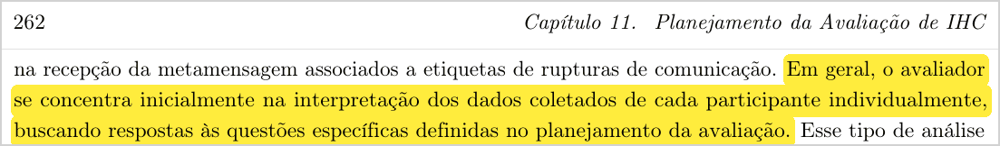
Fonte: BARBOSA et al. (2021, p. 262).
Figura 2: Consolidação entre participantes (p. 263).

Fonte: BARBOSA et al. (2021, p. 263).
Figura 3: Cautela na generalização e itens do relato (p. 263).
Fonte: BARBOSA et al. (2021, p. 263).
Figura 4: Dados coletados no teste de usabilidade (p. 289).

Fonte: BARBOSA et al. (2021, p. 289).
13. Telas do Protótipo Avaliado¶
As Figuras 5 a 14 mostram as telas do protótipo de alta fidelidade da TAR-09.
- Protótipo navegável: Acessar o protótipo da TAR-09
Figura 5: Página inicial com o Acesso Rápido e o botão "Meu Vale-Transporte foi recusado"
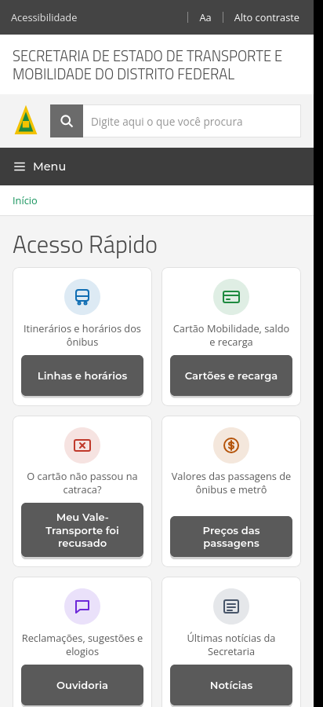
Fonte: Elaborado por Tomás Rocho (2026). Captura de tela do protótipo navegável.
Figura 6: Consulta do cartão pelo número ("Meu Vale-Transporte foi recusado")
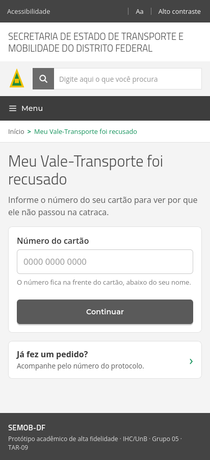
Fonte: Elaborado por Tomás Rocho (2026). Captura de tela do protótipo navegável.
Figura 7: Motivo da recusa: limite de 8 passagens por dia
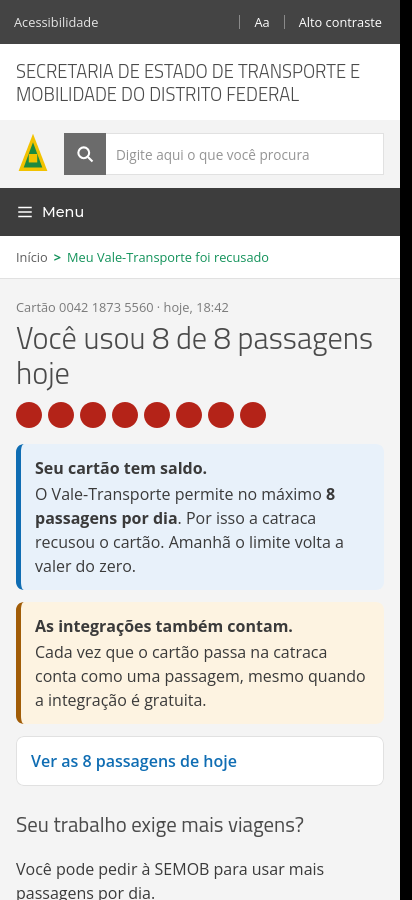
Fonte: Elaborado por Tomás Rocho (2026). Captura de tela do protótipo navegável.
Figura 8: Entregar no posto: locais de atendimento e documentos
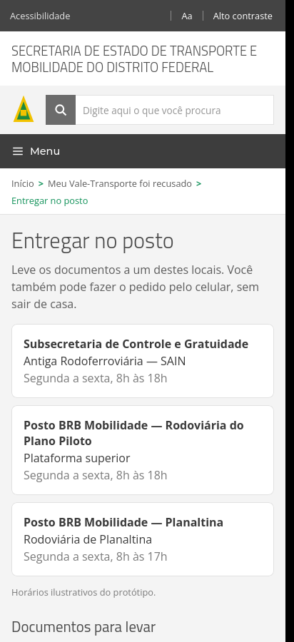
Fonte: Elaborado por Tomás Rocho (2026). Captura de tela do protótipo navegável.
Figura 9: Pedir mais passagens — Passo 1 de 3: Sua rotina
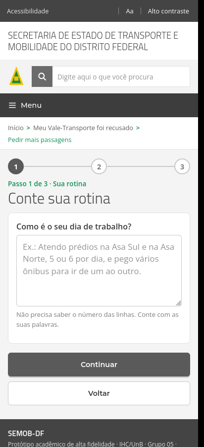
Fonte: Elaborado por Tomás Rocho (2026). Captura de tela do protótipo navegável.
Figura 10: Pedir mais passagens — Passo 2 de 3: Fotos dos documentos
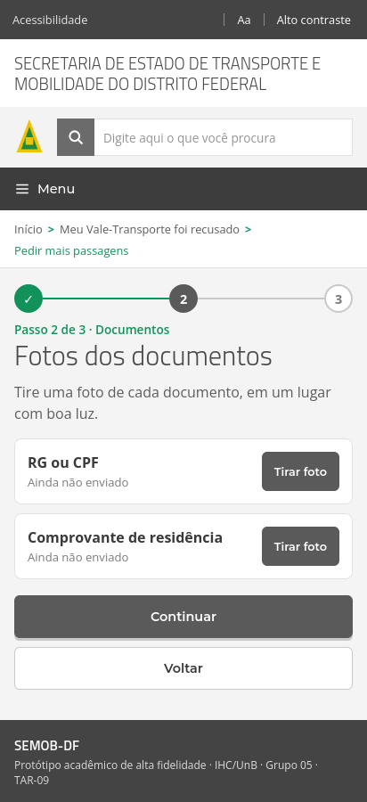
Fonte: Elaborado por Tomás Rocho (2026). Captura de tela do protótipo navegável.
Figura 11: Pedir mais passagens — Passo 3 de 3: Declaração do RH
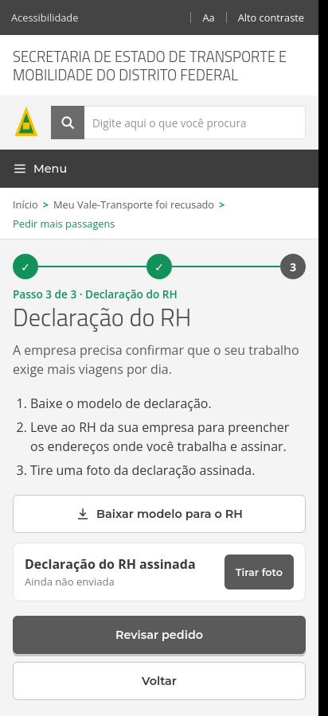
Fonte: Elaborado por Tomás Rocho (2026). Captura de tela do protótipo navegável.
Figura 12: Confira seu pedido
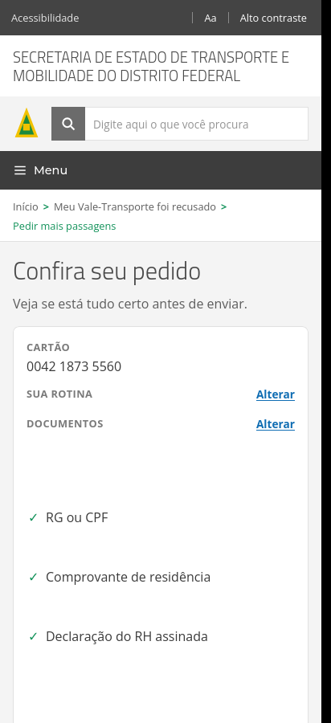
Fonte: Elaborado por Tomás Rocho (2026). Captura de tela do protótipo navegável.
Figura 13: Pedido enviado, com o número do protocolo
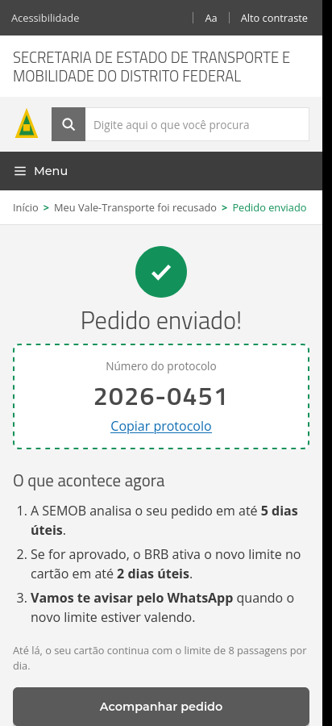
Fonte: Elaborado por Tomás Rocho (2026). Captura de tela do protótipo navegável.
Figura 14: Acompanhar pedido
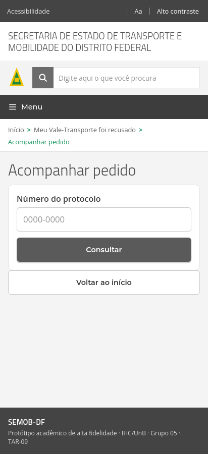
Fonte: Elaborado por Tomás Rocho (2026). Captura de tela do protótipo navegável.
---¶
14. Fotos de Referência¶
As Figuras 15 a 17 mostram os trechos que fundamentam este artefato, recortados e grifados em amarelo diretamente do livro da disciplina (BARBOSA et al., 2021).
Figura 15: Representação de interface em alta fidelidade
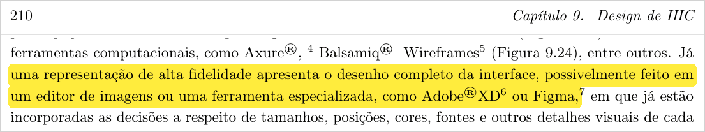
Fonte: BARBOSA et al. (2021, p. 210).
Figura 16: 12.2.1 Teste de usabilidade: objetivo, atividades e medidas por tarefa

Fonte: BARBOSA et al. (2021, pp. 288–289).
Figura 17: 11.7.5 Consolidação e relato dos resultados
Fonte: BARBOSA et al. (2021, p. 263).
15. Referências Bibliográficas¶
- BARBOSA, Simone Diniz Junqueira; SILVA, Bruno Santana da; SILVEIRA, Milene Selbach; GASPARINI, Isabela; DARIN, Ticianne; BARBOSA, Gabriel Diniz Junqueira. Interação Humano-Computador e Experiência do Usuário. Rio de Janeiro: Autopublicação, 2021. ISBN 978-65-00-19677-1.
- SALES, André Barros de. Plano de Ensino: Interação Humano Computador. Brasília: Universidade de Brasília, FCTE/UnB, 2026.